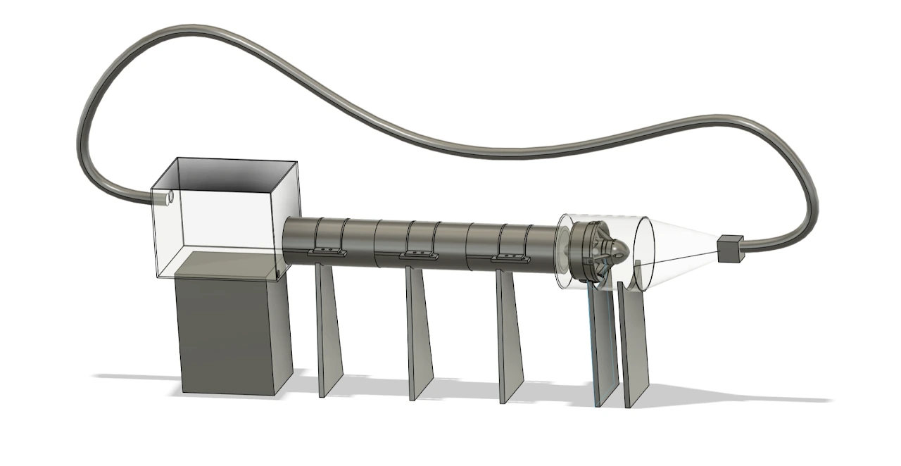
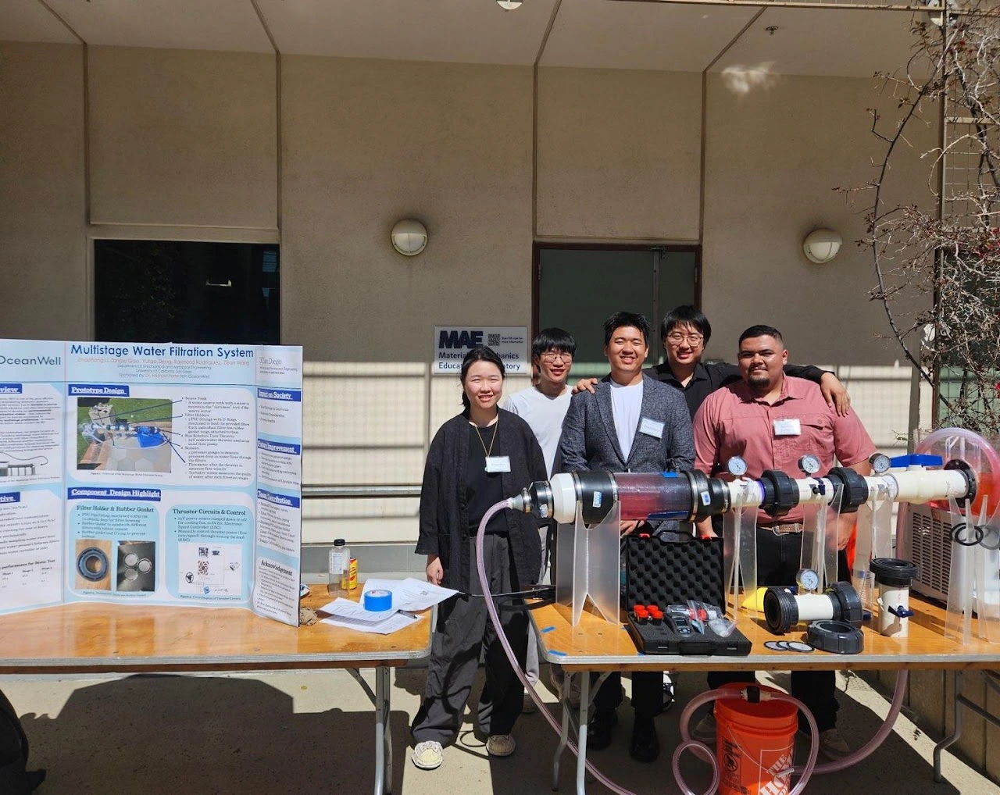

Experimental hardware / Fluid systems
OceanWell Test Rig
Build the experiment that makes better filtration possible.
A recirculating apparatus for comparing prefilters through flow and pressure measurements.
- Context
- UC San Diego · MAE 156B · Team 10
- Period
- Winter 2025
- My contribution
- Team member · circulation equipment & sealing repairs
Evaluation at a glance
Team tests reached approximately 4.5 gal/min with about a 2 psi pressure drop. Leak reliability and cooling remained the constraints on longer test runs.
Introduction
Make prefilter comparisons practical and repeatable.
Better prefilter testing helps engineers compare filtration designs before committing to larger water-treatment systems. This industry-sponsored capstone built a circulation apparatus for OceanWell engineers to evaluate interchangeable prefilters under controlled conditions.
The objective was to supply and recirculate water while measuring flow and pressure across the test section. Zongyu participated in the circulation-equipment effort and performed pipe-leak repairs with WaterWeld and threaded-joint repairs with PTFE tape.

Design & methods
Engineer the supporting flow loop.
A source tank, three interchangeable filter stages, a circulation thruster and return tubing formed the water loop. The team combined PVC pipework with flow, pressure and turbidity measurements to support comparisons of filter configurations.
Stable flow and sealing were central to usable test data. Anti-swirl boards helped condition the water entering the loop, while iterative leak repairs addressed the interfaces between pipes, threaded fittings and other components.

Evaluation
Measure flow, then identify what limits a longer test.
The team reported approximately 4.5 gal/min after adding anti-swirl boards and a pressure drop of about 2 psi. These results demonstrated the apparatus's ability to circulate water and produce measurements for prefilter evaluation.
Remaining leaks and cooling difficulties limited long-duration testing. The evaluation therefore identified two concrete priorities for the next iteration: improving seal reliability and resolving thermal constraints before extended operation.

Conclusion
The test infrastructure is an engineering product too.
The team delivered a working circulation prototype and a basis for comparing prefilter configurations. This project connected large-scale mechanical integration with experimental troubleshooting and showed how supporting equipment determines the quality of a test.
Image credits & project sources
Prototype, CAD and team photographs: UC San Diego MAE 156B, Winter 2025, Team 10. Test outcomes are team-reported.